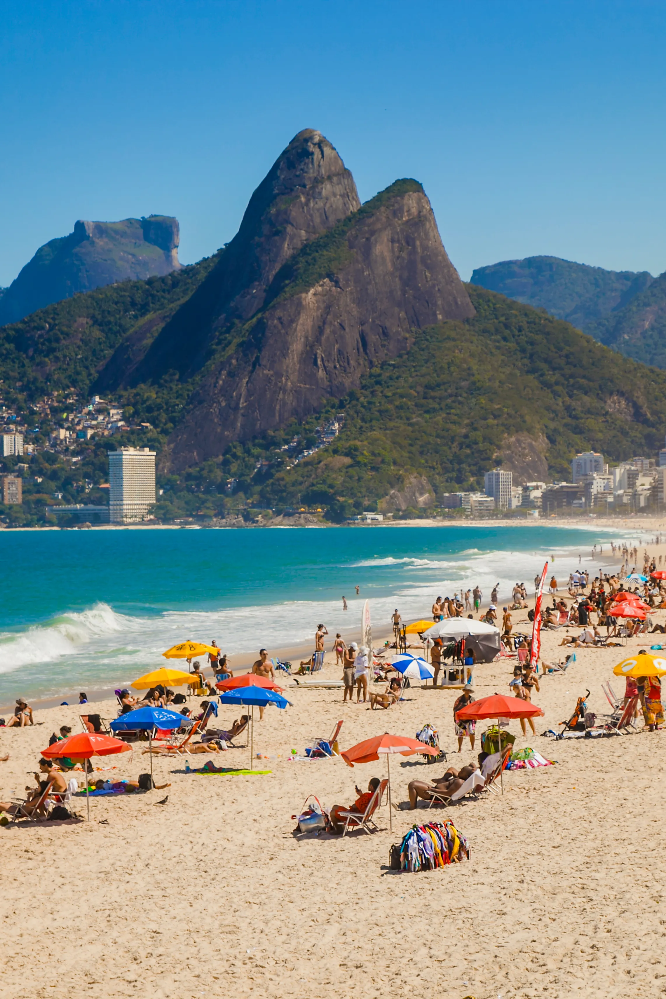
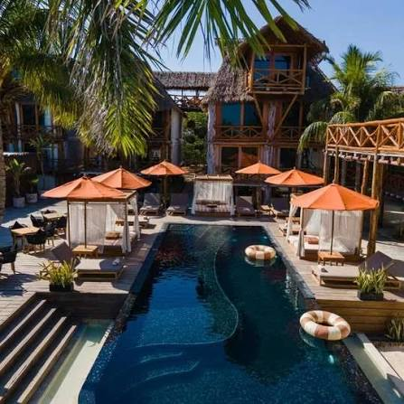
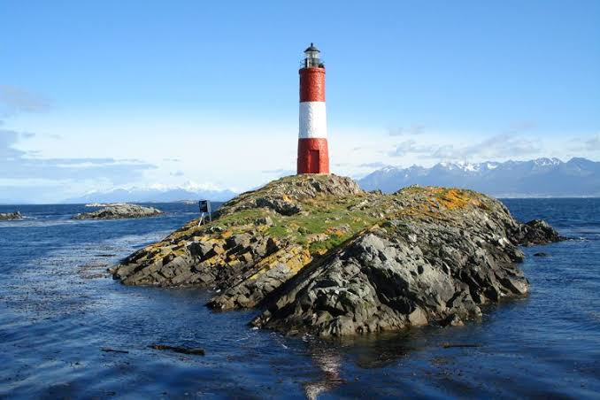

¿Qué podés encontrar en Puerto Aurora?
- Playas y paisajes costeros.
- Un puerto histórico lleno de vida.
- Espacios naturales para recorrer.
- Actividades culturales durante todo el año.
Nuestros paisajes



Nuestras Actividades
- Festival de las Luces
- Feria del Puerto
- Semana Aurora